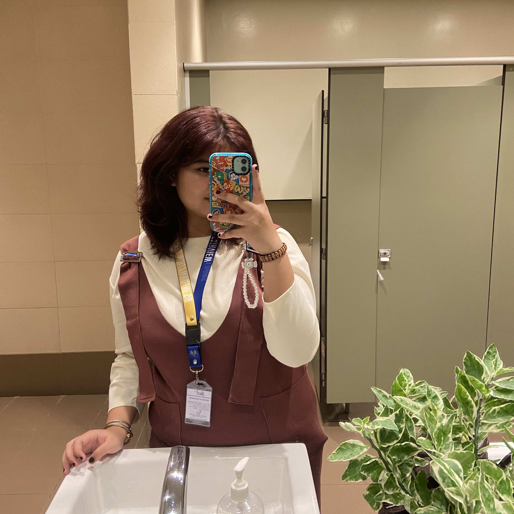
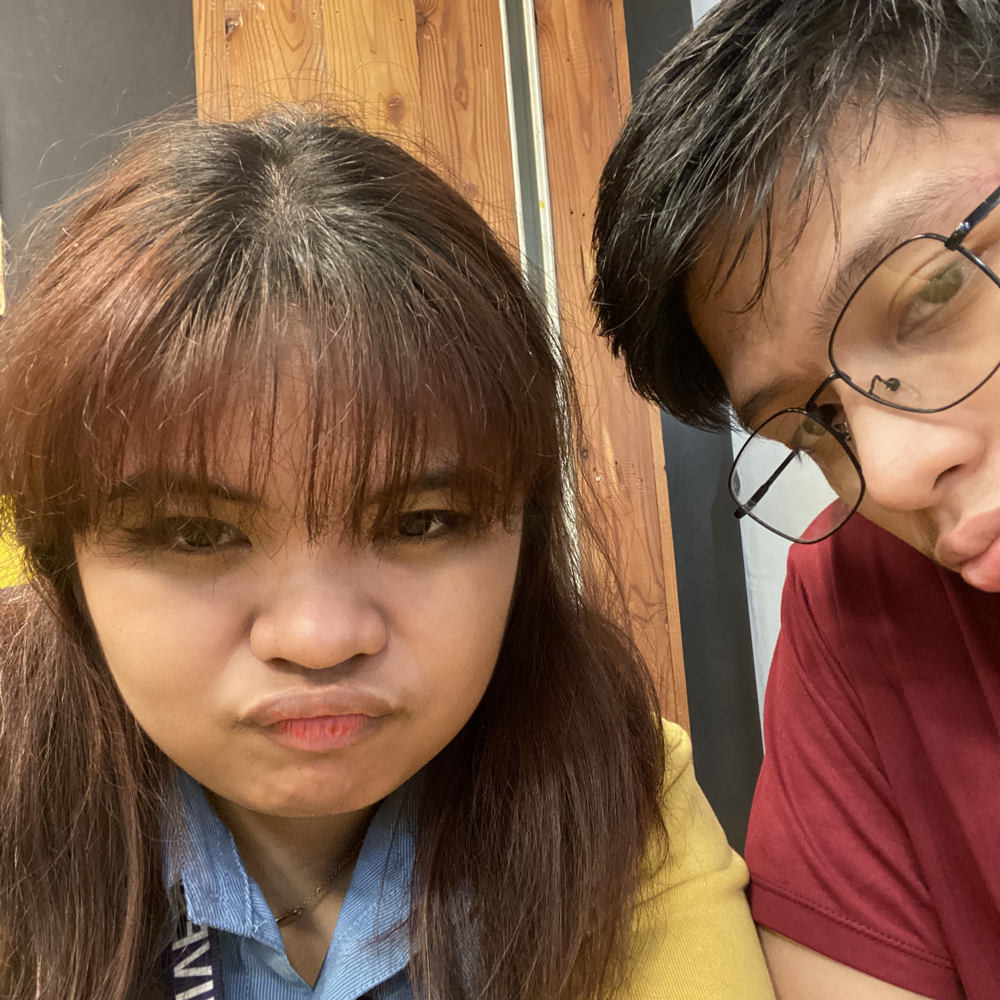
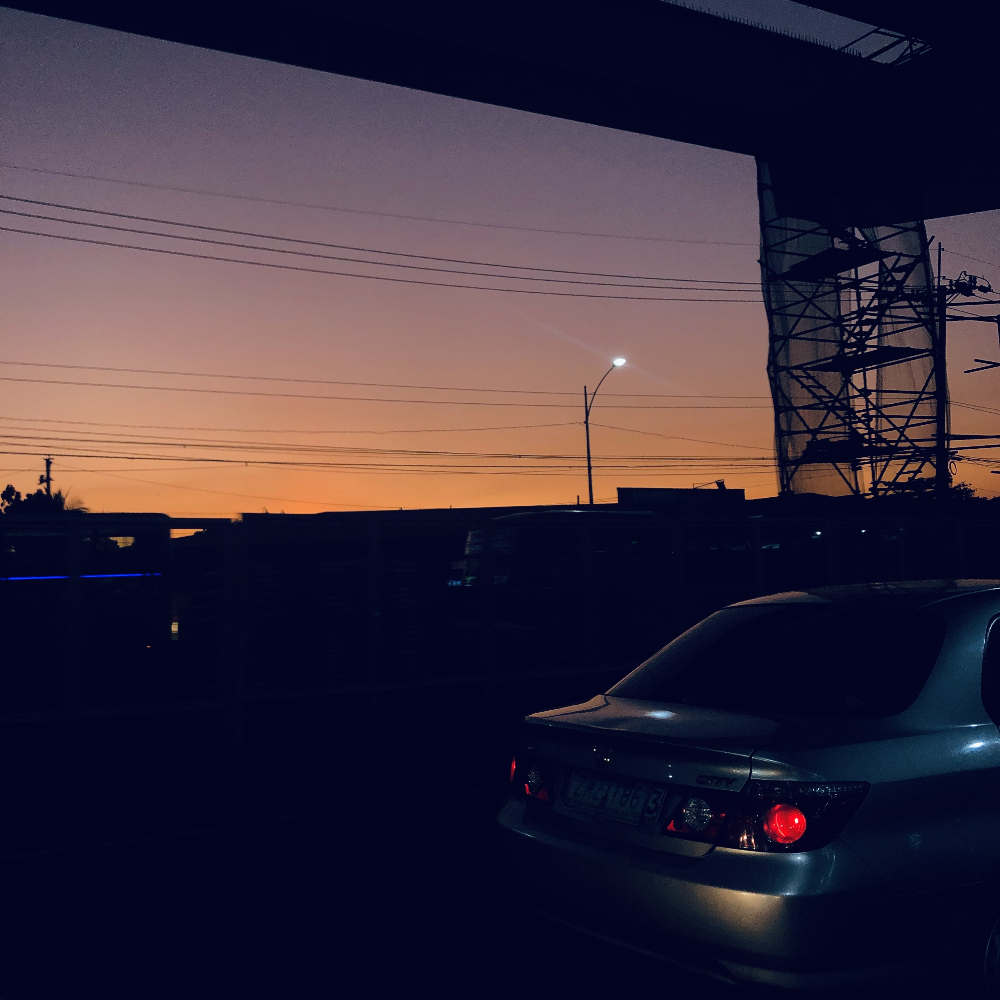
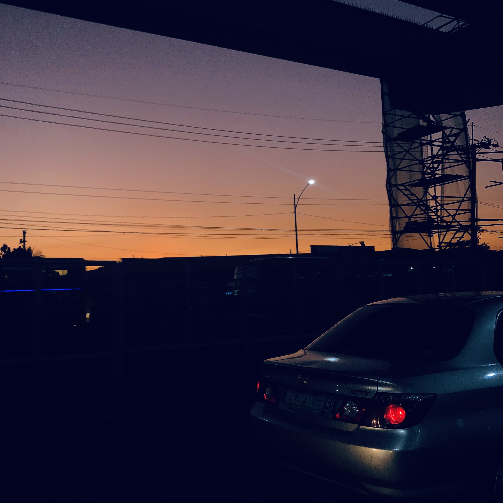

About Me

I am Sofia, a 19-year-old student and a student at National University Fairview branch as a BSIT student, born on January 17, 2005.
On this website, you will learn a little bit more about myself, it includes my favorite things (eg. pictures, friends, hobbies etc.), my
achievements and other contact information (eg. social medias).
Graduation
When I was in senior high school, I graduated with honors from the Technological Institute of the Philippines - Quezon City branch.
Relationship

I do have a loving boyfriend, who I met on school grounds and is actually a classmate. We met and became friends, and eventually
we became a thing and then a couple.
 
